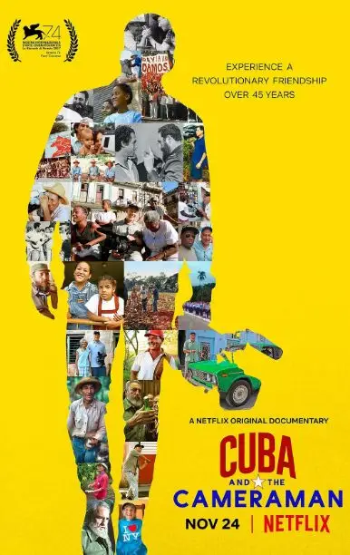
-01- 理想主义
上世纪七十年代，乔恩·阿尔珀特二十岁刚出头。
他是一个自由记者，也是一个理想主义者，他和别人联合创办了纽约市市中心社区电视中心。
致力于用媒体改变美国。
他们采访了为工资而罢工的出租车司机，曝光了建在垃圾堆上的居民楼、中国城的血汗工厂以及医院因削减成本产生的安全隐患。
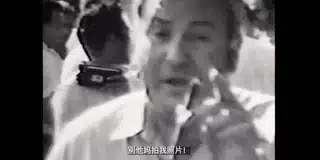
在阿尔伯特眼中，美国的医疗、教育、居住环境都存在着令人不安的问题。
这个时候，阿尔伯特听说古巴迎来了革命，正在在执行他们在美国争取的权利：免费医疗、免费教育以及工人权力。
古巴实验吸引了阿尔巴特的目光，于是，他操起摄影机前往古巴，要一探究竟。
令人敬佩的是，阿尔伯特的好奇心并不是两三天的热度，而是从1972到2016菲德尔·卡斯特罗去世持续了45年，他从一个年轻小伙子一直拍摄到满头白发。
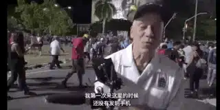
△ 乔恩.阿尔伯特
最终阿尔伯特从一千多小时的素材中剪辑形成纪录片《古巴与摄影师》。
光是这份坚持，也值得我们点32个赞。
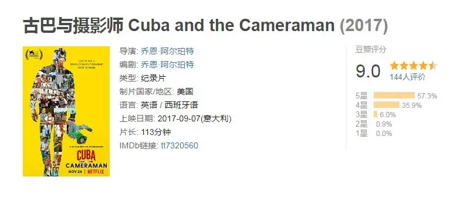
近半个世纪的记录，阿尔珀特用镜头见证了古巴最重要的历史时刻。
70年代的社会主义古巴推行全民免费医疗、免费教育，给每一个工人提供居住的公寓，食物实行配给，因为有苏联的撒币和物资供应，这个时期古巴的形势较为乐观。
1980年代的马里尔湾，近10万名古巴人逃离古巴，前往美国的迈阿密，这10万人中有大量囚犯、妓女、精神病患者以及异见分子。
△ 逃往美国大使馆的人会引起公愤
他们为政府和人民所不屑，菲德尔·卡斯特罗则大方地打开监狱和精神病院大门，给了他们选择离开古巴的机会。
而这些被驱逐的底端人口日后却将迈阿密建造成了一个国际化大都市。
20世纪90年代的古巴是艰辛的，柏林墙倒塌、东欧巨变、 苏联解体，古巴因此失去了苏联的高额补助以及物资供给。
社会福利虽然是免费的，但关键问题是没有东西供你用，食品、药物、石油等关键物质短缺，革命热情也因为饿肚子而干瘪，偷窃、抢劫行为频发，移民美国成为很多古巴人的梦想。
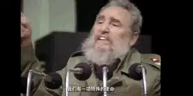
21世纪的社会主义古巴有点“不纯正”了，黑市交易、旅游业成为了古巴的救命稻草，贫富差距开始拉大，在古巴有两种人，有美国亲戚的人和没有美国亲戚的人。
因为在古巴各行各业的收入都是每个月25美元，为了有更高的收入，记者、工程师、科学家纷纷抛弃原职投身旅游业，在古巴，顾客甚至比古巴人更值钱。
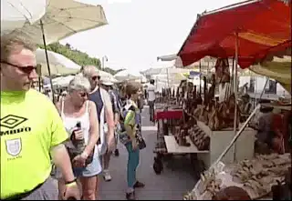
为了吸引游客，古巴人甚至将革命领袖和革命精神进行商品化包装加以售卖，切格瓦拉、卡斯特罗的画像成为了抢手货。
阿尔伯特向一个商贩开玩笑说：切格瓦拉要从坟墓中跳出来了，这可是资本主义！
-02- 菲德尔·卡斯特罗
菲德尔在古巴人心中是“神”一样的存在，他总是穿着一身军人制服，嘴里叼着一根雪茄，发表着激动人心的演讲。
从1970年代的自信革命者到1990年代的灰色领导者再到21世纪的老当益壮，菲德尔·卡斯特罗总是一个强人的形象。
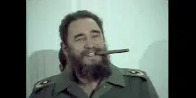
在阿尔伯特拍摄的珍贵镜头中，我们看到了作为“普通人”更多面的菲德尔。
1979，卡斯特罗从哈瓦那飞往纽约市去参加联合国大会，阿尔伯特是唯一一个陪在卡斯特罗身边的美国人。
在飞机上，阿尔伯特问卡斯特罗，你将要去一个有无数人反对你的城市，甚至有人要暗杀你，你怎么看。
卡斯特罗笑着告诉阿尔伯特“我们都会死，只是不知道哪一天死去，所以我很淡定”。
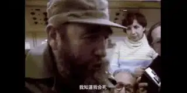
阿尔伯特接着问，很多人说你常年穿着防弹衣，是这样么。
卡斯特罗倒是非常坦率，直接将衣服解开，并没有穿防弹衣。
当下飞机时，面对美国让所有人填登记表的要求，卡斯特罗有脾气、有性格，直接发火拒绝了这一要求。
第二天，就在卡斯特罗要在联合国演讲之前，他正要喝一杯啤酒时，阿尔珀特急忙指出，古巴国家元首可能不想在说话之前喝太多酒。
卡斯特罗同意“是的”，接着便把啤酒放在一边。
原来，一个近乎神话般的人物也是一个会聆听、会发脾气的普通男人。
甚至，卡斯特罗有着非常幽默的一面，多年以后，当阿尔伯特再次见到他的时候，卡斯特罗只说西班牙语，而曾经，卡斯特罗还会时不时冒几句英语。
阿尔伯特问他怎么现在不说英语了。
卡斯特罗告诉他“因为美国一直攻击我们，所以英语忘了”。
2016年，在“最高领袖”去世前不久，阿尔珀特是最后一个见到卡斯特罗的美国人。
看着他面前的这个90岁的病人，阿尔伯特不禁想起多年前卡斯特罗关于死亡的话而感到无限感慨，死亡面前，伟人也是一样的软弱。
而卡斯特罗的离开也标志着一个时代的结束。
他也许不会想到，就在今年，古巴修改宪法，不仅规定了任期，还从法律上肯定了私有财产的合法性。
半个多世纪充满理想主义实验的终点似乎是资本主义的起点，令人深思。
-03- 三个家庭
这部纪录片最难能可贵的是将镜头对准了三个具体的家庭。
半个世纪的变迁，历史洪流下小人物的命运更让人感慨。
阿尔伯特在街头认识的好朋友路易斯，他住在哈瓦那一个破旧的小巷里，生活相当拮据，冰箱里始终空空如也，多年以后再次探寻他，却得知路易斯因为黑市买卖进了监狱。
蹲了4年牢，路易斯出来后当了公园清洁工，继续紧巴巴地生活着。
进入21世纪，随着政府睁一只眼、闭一只眼的默许，头脑灵活的路易斯通过贩卖建材成为了中产户，冰箱中再也不是空空如也，而是塞满了食物。
在70年代的一次街头采访中，阿尔伯特遇到了雄心勃勃的女孩卡里达，她的梦想是成为护士。
多年以后，当阿尔伯特找到她的时候，卡里达并没有成为一名护士，而是在14岁的时候辍学结婚，如今已经是两个孩子的妈妈。
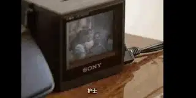
阿尔伯特问她，你希望多年以后我再见到你的时候，会是怎么样的场景，卡里达告诉他，希望下次来的时候，两个孩子事业有成，一家人在一起幸福的生活。
七年以后，阿尔伯特没有看到卡里达，她已经移民美国，而两个孩子生活的很丧，觉得在古巴没有希望，他们生活拮据，靠妈妈寄来的钱过活，冰箱里也只有一些萨拉酱。
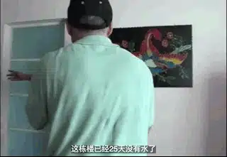
若干年后，阿尔伯特再次来拜访他们的时候，却得知兄妹两都已移民美国。
不同于处于城市中容易受环境影响的路易斯和卡里达，克里斯托瓦尔三兄弟生活在农村，他们靠一小块土地谋生，阿尔伯特认识他们的时候，三兄弟都已经六十多岁。
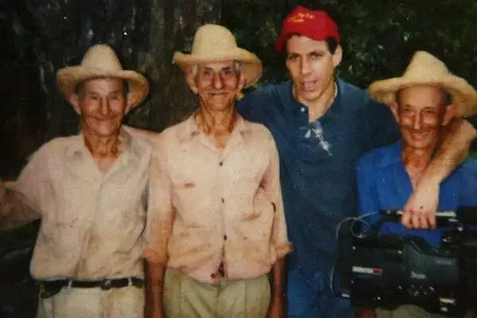
他们是典型的小农，自给自足，不伦国家发生了什么，他们始终乐观，始终喝着朗姆酒耕耘着眼前的土地。
可是，艰难的90年代还是直接冲击三兄弟的生活，因为每个人没有肉吃，他们的牲畜被人陆续偷走吃了，就是耕地的两头牛也被人偷吃了，甚至田地里的瓜果、豆子都被人一扫而空。
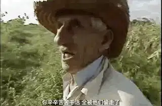
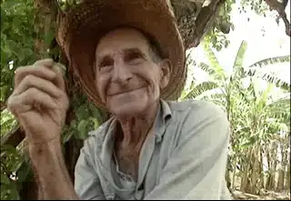
生活这么不容易，三兄弟依旧乐观，一点朗姆酒，烦恼全忘掉。
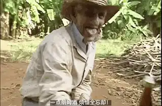
几十年下来，他们的生活始终没有太大的变化，只是人在不断变老。
当阿尔伯特最后一次来到这里的时候，三个兄弟已经长埋土下。
阿尔伯特感慨地告诉观众：
拍我的朋友受苦真的不是一件好受的事，我来古巴的时候是一个理想主义青年.....后来我爱上了古巴,遗憾的是没有机会和三兄弟告别。
△ 阿尔伯特和三兄弟的妹妹
45年的记录，原来真正的主角不是政治、不是教育，也不是医疗，而是时间和时间中的人。
用镜头记录下他们的变化本身就是一个奇迹，纪录片没有评价卡斯特罗的功过是非，也没有控诉美国的封锁，而是用忠实的记录给了生活在这片时空之下古巴人最大的尊重。
他们曾一边喝着朗姆酒一边唱着歌在历史中踽踽前行！
关注并回复：摄影师与古巴
获取电影资源
这里没有挑逗你眼目情欲的小鲜肉
也没有挑动你肉体情欲的段子
更没有膨胀你今生骄傲的鸡血
我们只在乎那些最质朴真诚的作品
在那里我们才能恢复真正的想象力
我们也坚信这才是我们真正需要的

ID:Six_hundred_hits
长按二维码，一键关注
【六百击】
-END-
电影评论
尽情分享朋友圈

苹果打赏通道
小提示：文末广告是腾讯配送广告，内容与本号无关，但您的每次点击（无需反复点）都会给平台带来几毛收益，欢迎您点击支持六百击。